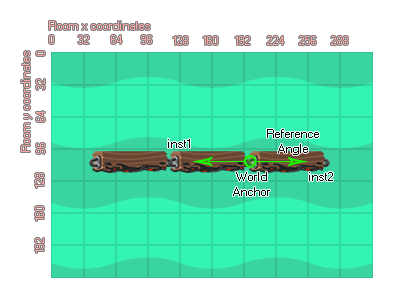

physics_joint_weld_create(inst1, inst2, anchor_x, anchor_y, ref_angle, freq_hz, damping_ratio, col)
| Streit | Beschreibung |
|---|---|
| inst1 | Die erste Instanz zum Verbinden mit dem Gelenk |
| inst2 | Die zweite Instanz, um sich mit dem Gelenk zu verbinden |
| anchor_x | Die x-Koordinate für das Gelenk innerhalb der Spielwelt |
| anchor_y | Die y-Koordinate für das Gelenk innerhalb der Spielwelt |
| ref_angle | Der Gelenkwinkel zu erhalten |
| freq_hz | Dies ist die Schwingungsfrequenz für das Gelenk, in Hertz |
| damping_ratio | Dieses Dämpfungsverhältnis für die Verbindung |
| col | Ob die beiden Instanzen kollidieren können (wahr) oder nicht (falsch) |
Rückgabe: Index des Gelenks
Die Schweißnaht ist so ausgelegt, dass zwei Befestigungen in einer starken und dennoch flexiblen Verbindung miteinander verbunden werden. Die Schweißverbindung ermöglicht ein Biegen zwischen den zwei verbundenen Vorrichtungen, jedoch ohne die Dehnung, die beispielsweise mit einer Abstandsverbindung verbunden ist, und wird immer versuchen, unter irgendwelchen Belastungen oder Lasten auf den Bezugswinkel zurückzufedern. Sie definieren den Punkt in dem Raum, in dem das Gelenk erstellt werden soll, sowie den Winkel, den das Gelenk zu jeder Zeit versuchen und beibehalten soll, wie in der folgenden Abbildung gezeigt:

Wie Sie sehen können, werden die Ankerpunkte als Raumkoordinaten angegeben, daher muss bei der Definition besonders darauf geachtet werden, dass die Instanzen gleichzeitig mit den Gelenken erstellt werden und nicht durch den Raumeditor in den Raum platziert werden. Sie sollten auch erkennen, dass die Gelenke unabhängig von der Größe des Sprites der Instanzen oder der Befestigungen, die sie angebracht haben, erstellt werden. Wenn Sie also eine Schweißnaht irgendwo anders als den Ursprung der Instanz erstellen, ist sie immer noch gültig und beschränkt die beiden Instanzen auf die Position, an der sie erstellt wurde.
Da die Schweißverbindung flexibel ist und sich bei jeder Belastung biegt und biegt, können Sie die Schwingungsfrequenz (in Hz) sowie das Dämpfungsverhältnis für das Gelenk so einstellen, dass unterschiedliche Effekte erzielt werden - Sie müssen möglicherweise mit diesen Werten fein arbeiten stimmen Sie sie ab und es wird empfohlen, dass Sie mit kleineren Werten beginnen und sie erhöhen, bis Sie den gewünschten Effekt erhalten.
Wenn Sie den Wert "col" auf festlegen true dann können die beiden Instanzen interagieren und miteinander kollidieren, aber nur wenn sie Kollisionsereignisse haben, wenn sie jedoch auf gesetzt sind false sie werden nicht kollidieren, egal was passiert.
var i, fix, o_id, p_id;
p_id = noone;
o_id = noone;
fix = physics_fixture_create();
physics_fixture_set_box_shape(fix, 64, 32);
for (i = 0; i < 5; i++;)
{
o_id = instance_create_layer(x + (128 * i), y,
"Instances", obj_BridgePart);
physics_fixture_bind(fix, o_id);
if i > 0 && i < 4
{
physics_joint_weld_create(p_id,
o_id, x + (128 * i) - 64, y, 0, 10, 12, true);
}
p_id = o_id;
}
physics-fixture_delete(fix);
Der obige Code erstellt eine Fixture und verwendet dann eine Schleife, um eine Anzahl von Instanzen zu erstellen, die Fixture an jede neue Instanz zu binden und sie dann alle zusammen mit einer Schweißverbindung zu verbinden. Schließlich wird das Gerät aus dem Speicher gelöscht.